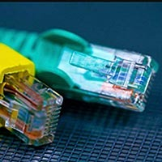

¿Qué es una red MAN?
07 de Marzo 2024 por Anthony Dionicio
Las redes MAN (Metropolitan Area Network por sus siglas en Inglés) son una tecnología de red de computadoras que permite la interconexión de múltiples dispositivos y recursos en una zona geográfica extensa, como una ciudad, área metropolitana o campus universitario.
Las redes MAN se caracterizan por tener altas velocidades de transmisión de datos y por ofrecer una gran capacidad de ancho de banda para soportar el tráfico de datos de múltiples usuarios y aplicaciones.
Las redes MAN son importantes porque permiten la conexión y la comunicación entre diferentes ubicaciones dentro de una ciudad o área metropolitana. Proporcionan una alta velocidad y fiabilidad en la transferencia de datos, voz y video, lo que las hace ideales para empresas y organizaciones con múltiples ubicaciones.
¿Cómo funcionan las redes MAN?
En una red MAN, los dispositivos de red están interconectados mediante cables de alta velocidad, como fibra óptica o cable coaxial, lo que permite una transmisión de datos rápida y eficiente.
Se basan en una topología de red de estrella extendida, en la que se utilizan nodos de concentración para conectar varias redes LAN. Estos nodos, también conocidos como conmutadores metropolitanos (MST), actúan como puntos centrales de la red y permiten que los dispositivos de red se comuniquen entre sí.
Las redes MAN pueden utilizar diversas tecnologías para la transmisión de datos, como la fibra óptica, el cable coaxial y el par trenzado de cobre. La elección de la tecnología dependerá del costo, la velocidad y la distancia de transmisión requeridos.
Otra tecnología comúnmente utilizada en las redes MAN es la Multiplexación por División de Longitud de Onda (Wavelength Division Multiplexing o WDM), que permite la transmisión de múltiples señales de fibra óptica en una sola fibra utilizando diferentes ondas.
Tipos de redes MAN
Algunos de los tipos de redes MAN más comunes son:Redes MAN basadas en fibra óptica: Se utilizan para proporcionar velocidades de transmisión de datos extremadamente rápidas y eficientes; son comúnmente utilizadas por empresas y proveedores de servicios de Internet (ISP).
Redes MAN basadas en cable coaxial: Estas redes utilizan cable coaxial como medio de transmisión y proporcionan velocidades de transmisión de datos más lentas en comparación con las redes MAN basadas en fibra óptica.
Redes MAN inalámbricas: Estas redes utilizan tecnologías inalámbricas como Wi-Fi y WiMAX para proporcionar conectividad inalámbrica a los dispositivos en una red MAN. Son comúnmente utilizadas en áreas urbanas y campus universitarios.
Redes MAN de malla: Estas redes utilizan múltiples nodos para crear una red de malla interconectada que proporciona conectividad en toda el área metropolitana. Son comúnmente utilizadas por empresas y proveedores de servicios de Internet.
Redes MAN híbridas: Estas redes combinan diferentes tecnologías de transmisión de datos, como la fibra óptica y la inalámbrica, para proporcionar una mayor redundancia y fiabilidad en la red. Características de las redes MAN